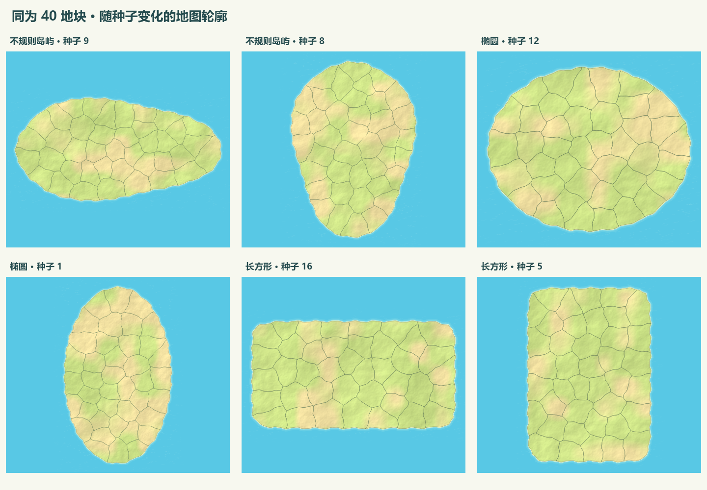

抛射部队直接拖箭头指向敌方地块或军队。射程外自动接近，进入射程后停下展开；行军中也可中断并展开。最小射程 65、最大射程 330，以部队中心计算，近敌压制保留。右栏没有独立炮击按钮。
每次发射重新瞄准敌军的当前真实位置，目标死亡后继续攻击所选组的幸存者。抛射伤害可作用于驻军、在途和交战单位；未装追踪的炮弹发射后仍按落点飞行，移动目标可以躲开。追踪配件负责发射后的空中修正。
相同地块数量保持相同平均面积；轮廓类型、长宽比例、横纵方向和地块分割均由种子确定。以下由实际地图生成及地形绘制逻辑离线导出。

建造与产出卡片继续使用 SVG，两列排布。激光枪的旧图卡和 AI 图片仅作本地历史素材保留。